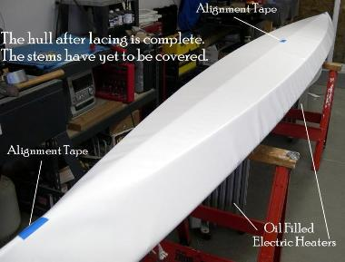
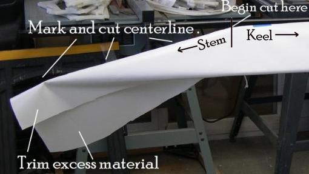

| Covering The Hull (4 of 6) | Menu Previous Page Next Page |
|  |
One-Piece Hull
6. A view of the hull after lacing is complete. There are a few wrinkles in the one piece PVC hull skin, usually between the gunwale and chines.
|
|  |
Covering the stems (Rub Strip Method)
7. Pull one side of the excess PVC up and over the stem tube and mark a line down the center of the tube. Cut along
this line with a razor knife starting at the keel / stem bend. Repeat this process with the excess skin from the other side
of the stem tube.
Next, a rub strip will be glued over the stems.
|